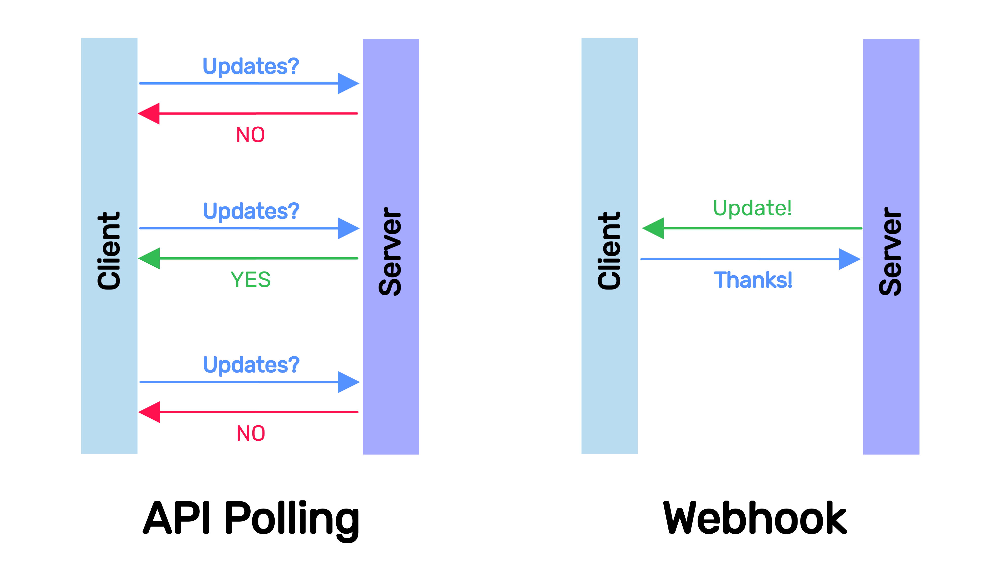

Update ShinyProxy

Once your ShinyProxy server is up and running, you need to maintain and update it. This section explains how to update existing apps and how to add new ones hassle free.

Edit configuration
Create and application.yml file or use the file in the previous section as a starting point. The file is also available here.
The most important part is adding apps:
The keys for the apps are the following (see the official docs). The three most important ones are:
id: the identifier of the application, this will also be part of the path to the appcontainer-cmd: the command that will be run when the Docker container is launchedcontainer-image: name of the docker image to be started for every new user of this app
The Docker images need to be pulled beforehand. If you are using private images, docker login will also be required before pulling images.
Docker login
This step is optional if private registry access is needed for pulling Docker images.
Log into your droplet via ssh and lig into your registry via docker login
(Docker Hub by default, use docker login registry.gitlab.com for the GitLab
container registry). You will be asked to authenticate interactively
and your personal access token will be saved on the droplet for future use.
Update script
Once your application.yml is ready, cd into the directory where the configuration file is located and download the following script file:
Use the setup.sh as:
The following command line arguments need to be passed to the setup.sh script:
-i: path to your ssh key,-s: user name (root for DigitalOcean droplets) and the IP address:user@ip_address,-f: path and file name to the yml with the ShinyProxy config, e.g./path/to/application-new.yml.
The script then takes care of the rest:
- Copies the
application.ymlto the droplet, - pulls the Docker images listed in the
application.ymlfile: updates the ones already pulled before, and the ones newly added too, - and restarts the ShinyProxy and Docker services.
Cron
If the config file is not changing (i.e. no new apps added), you can set up cron job to regularly update the images that are already pulled to the server.
We have access to the cron utility: run crontab -e,
pick an editor (nano) if you haven't done so already and then add
these lines to the bottom and save it:
The cleanup command removes dangling (not needed) images that take up unnecessary space.
The second command updates all the images that are already present.
Check settings using crontab -l.
Cron jobs represent a polling type of update, which means we are regularly checking for updates. However, if changes to the images are infrequent, there is no need for constant polling. Setting cron intervals too large might lead to missing important updates.

Webhooks in general are considered a better alternative to polling, although webhooks require a bit more work. The next section will explain how to do it.
Further reading